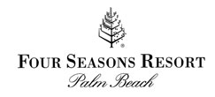
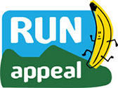
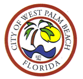

SPONSORS - RUN PALM BEACH
We would like to thank our sponsor for supporting the running community, and helping us put on these events. Without their support, these events would not be possible!
Please contact us if you would like information about sponsoring this event, or others that Run Palm Beach assists with.



